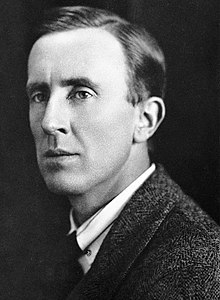
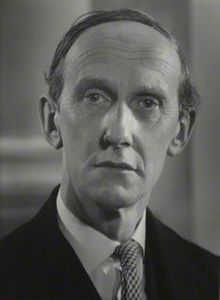
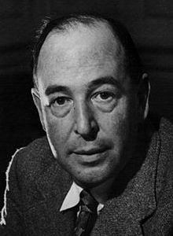

John Ronald Reuel Tolkien
(3 January 1892 – 2 September 1973)
English writer, poet, philologist, and academic.

Lord Edward Christian David Gascoyne-Cecil
(9 April 1902 – 1 January 1986)
British biographer, historian, and scholar.

Clive Staples Lewis
(29 November 1898 – 22 November 1963)
British writer and lay theologian.

Sir Percy Elly Bates
(12 May 1879 – 16 October 1946)
English shipowner.